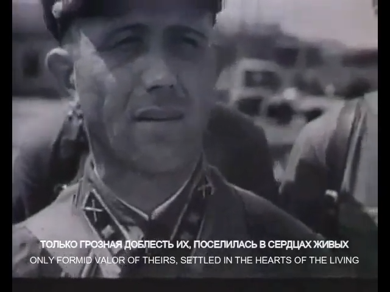
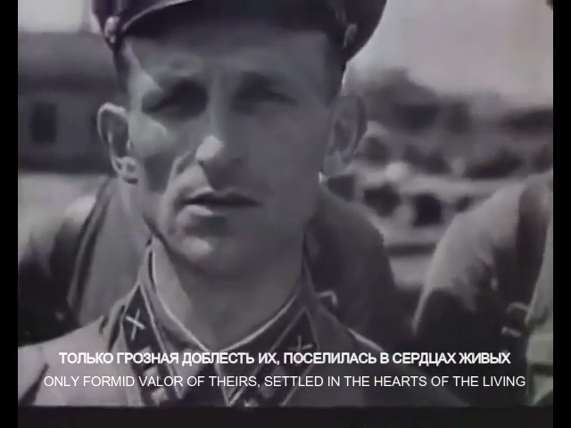
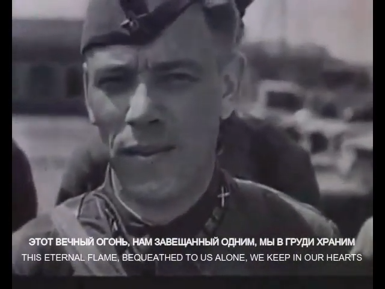
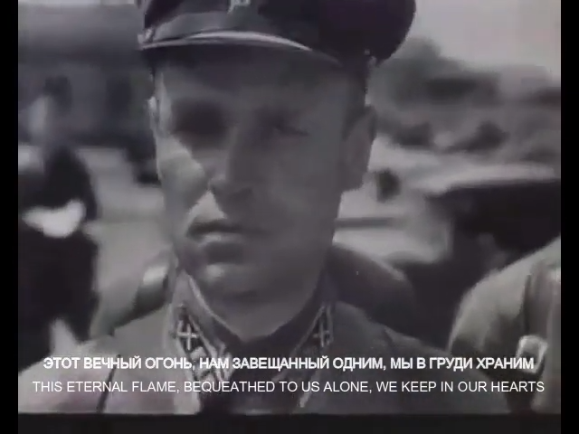

All heroes of time past: humans, first and foremost
To be released:
|

Dec 7th 2024
|

May 9th 2025
|

June 22nd 2025
|

August 1st 2025
|
August 2nd 2025
|
, ?EN version?, ...
Dedicated to all combatants of WWII: Lest we forget - we are all first and foremost humans.